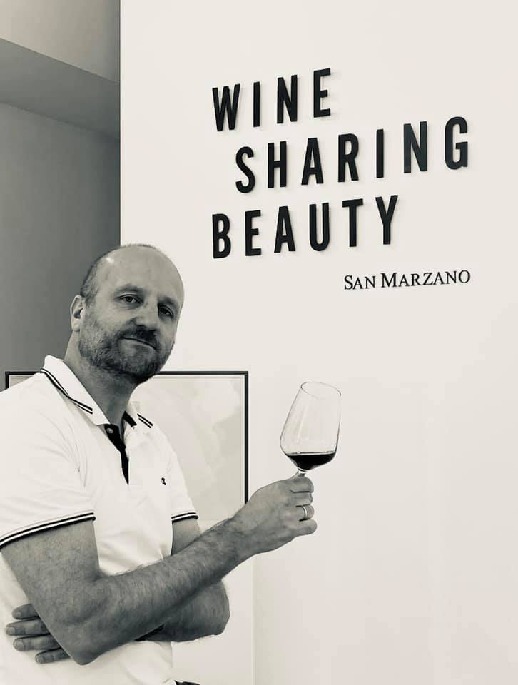
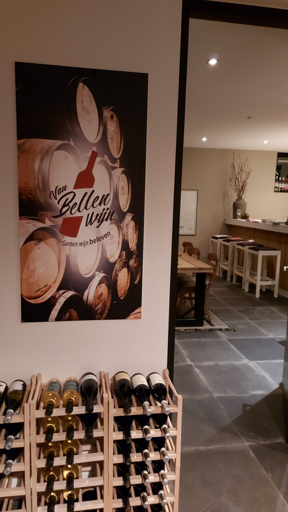

Dé plek voor wijnliefhebbers in Veenendaal, waar we samen wijn beleven.
Van Bellen Wijn is een jong bedrijf dat zich toelegt op het organiseren van Italiaanse wijnproeverijen en wijncursussen, relatiegeschenken en cadeaus, en het geven van wijnadvies op maat voor feestelijkheden in het groot of klein. Daarnaast importeert Van Bellen Wijn de lekkerste wijnen uit Italië.
Van Bellen Wijn stimuleert het samen wijn beleven en wil hét platform zijn in Veenendaal en omgeving om samen te genieten van en meer te leren over wijn.

Sander van Bellen is reeds vele jaren een actief wijndrinker en proever. De laatste jaren is hij zich, mede door de diverse Italiaanse vakanties, meer gaan richten op wijnen uit de verschillende Italiaanse regio's.
Daarnaast heeft hij diverse wijncursussen gevolgd en volgt hij deze nog steeds om met zijn kennis bij te blijven. Die kennis en passie deelt hij graag: tijdens een proeverij, een cursus of in een persoonlijk wijnadvies.

De activiteiten worden georganiseerd in de sfeervolle wijnkelder van familie Van Bellen in Veenendaal. Bij de familie staat gastvrijheid hoog in het vaandel en zij houden ervan om hun gasten goed te verwennen met lekkere wijn-/spijscombinaties.
Een warme, ongedwongen omgeving waar je op je gemak nieuwe wijnen en smaken ontdekt: alleen, met vrienden of als groep.
Bekijk proeverijen & cursussenPlan een proeverij of stel je vraag. We verwelkomen je graag in de wijnkelder.
Neem contact op